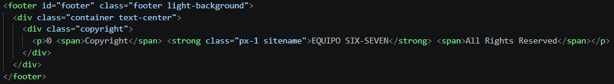

HTML
Etiquetas semánticas de HTML
¿Qué son las etiquetas semánticas?
Las etiquetas semánticas permiten organizar el contenido de una página HTML según la función que cumple cada sección. Estas etiquetas ayudan a estructurar el contenido de forma clara, facilitando su comprensión tanto para las personas como para los navegadores y otras herramientas.
<header>
La etiqueta <header> se utiliza para definir el encabezado de una página o de una sección. Puede contener elementos como títulos, logotipos y otros elementos relacionados con la introducción del contenido.
¿Cómo utilizamos <header> en SIX-SEVEN?
En nuestro sitio web, utilizamos la etiqueta <header> para estructurar el encabezado principal de nuestras páginas. En él se encuentra el logotipo del equipo y la barra de navegación, permitiendo identificar el sitio y facilitar el acceso a sus distintas secciones. En nuestro sitio web, el <header> contiene tanto el logotipo de SIX-SEVEN como el elemento <nav> utilizado para la navegación principal.

<nav>
La etiqueta <nav> se utiliza para definir una sección de navegación dentro de una página web. Generalmente contiene enlaces que permiten al usuario desplazarse hacia otras páginas o secciones del sitio.
¿Cómo utilizamos <nav> en SIX-SEVEN?
En nuestro sitio web, utilizamos la etiqueta <nav> para agrupar los enlaces que forman parte de la navegación principal. Esta se encuentra dentro del <header> y permite a los usuarios desplazarse entre las distintas páginas del sitio, como Inicio, Integrantes e Investigación.

<main>
La etiqueta <main> se utiliza para identificar el contenido principal de una página web. Dentro de ella se coloca la información central que constituye el propósito principal de la página.
¿Cómo utilizamos <main> en SIX-SEVEN?
En nuestro sitio web, utilizamos la etiqueta <main> para contener el contenido principal de cada página. Dentro de este elemento organizamos las diferentes secciones que presentan la información más importante del sitio, separándola de elementos como el encabezado y el pie de página.

<section>
La etiqueta <section> se utiliza para dividir el contenido de una página en secciones relacionadas entre sí. Cada sección puede agrupar contenido que pertenece a un mismo tema o propósito.
¿Cómo utilizamos <section> en SIX-SEVEN?
En nuestro sitio web, utilizamos la etiqueta <section> para organizar el contenido principal en diferentes grupos relacionados. Por ejemplo, dentro del <main> de nuestra página de inicio utilizamos una sección para presentar al equipo y otras secciones para organizar diferentes contenidos del sitio.

<article>
La etiqueta <article> se utiliza para representar un contenido independiente dentro de una página. Puede utilizarse para elementos como artículos, publicaciones, noticias o cualquier contenido que tenga sentido por sí mismo.
¿Cómo utilizamos <article> en SIX-SEVEN?
En nuestro sitio web, utilizamos la etiqueta <article> para representar cada investigación como un contenido independiente. En el índice de investigaciones, cada tarjeta contiene información sobre un tema específico y puede comprenderse de manera individual, por lo que resulta apropiado utilizar <article> para estructurar estas tarjetas.

<aside>
La etiqueta <aside> se utiliza para contener información relacionada con el contenido principal, pero que no forma parte directamente de este. Puede utilizarse para incluir información complementaria, enlaces, notas o contenido adicional.
¿Cómo utilizamos <aside> en SIX-SEVEN?
En nuestra investigación utilizamos la etiqueta <aside> para mostrar información complementaria relacionada con cada etiqueta HTML. Estos bloques contienen datos adicionales que ayudan a ampliar la información presentada, pero que no son necesarios para comprender la explicación principal.

<footer>
La etiqueta <footer> se utiliza para definir el pie de página de un documento o de una sección. Puede contener información como derechos de autor, enlaces, datos de contacto u otra información relacionada con el contenido.
¿Cómo utilizamos <footer> en SIX-SEVEN?
En nuestro sitio web, utilizamos la etiqueta <footer> para definir el pie de página de nuestras páginas. En él mostramos información general del equipo, como el nombre de SIX-SEVEN y los derechos reservados del sitio.
